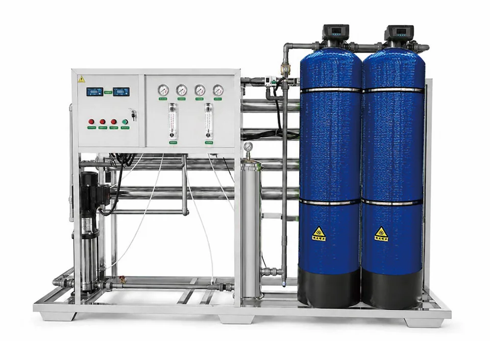

Dual-Tank Pretreatment Integrated Skid RO Equipment 1000-3000 L/h
- Item
- Specification
- Product Type
- Dual-Tank Pretreatment Integrated Skid RO Equipment 1000-3000 L/h
- Operating Mode
- Full automatic intelligent operation, with manual service mode according to project needs